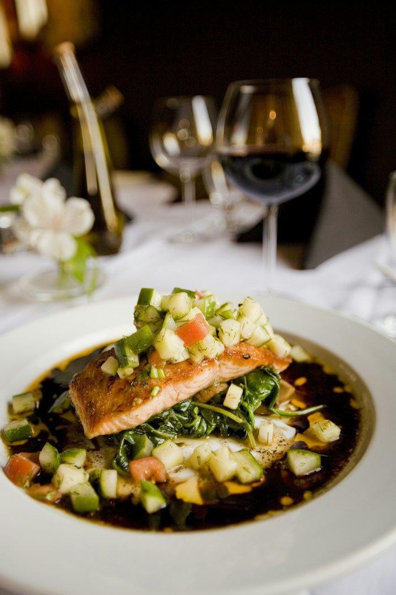

Питаниедля набора массы

Пять или шесть приёмов пищи для тех, кто регулярно тренируется. При подборе программы можно уточнить калорийность и размер порций.
О программе
Программа из пяти или шести приёмов пищи для набора массы.
Вам подойдёт, если
- Регулярно тренируетесь
- Планируете рацион для набора массы
- Предпочитаете более сытное питание
Что входит в программу
Готовый рацион на день, порционная упаковка и утренняя доставка по Алматы. Блюда нужно хранить в холодильнике, соблюдая срок годности и рекомендации на этикетке.
Количество приёмов пищи и нужную калорийность согласуют при подборе программы. Результат зависит от питания, нагрузки и индивидуальных особенностей.
Вопросы о программе
Когда приезжает рацион?
Ежедневно, с 06:00 до 10:00 по Алматы. Доставка включена в стоимость. Адрес и удобный интервал согласуют перед началом программы.
Можно начать с одного дня?
Да, можно познакомиться с форматом за пробный день. Условия спецпредложений и точную стоимость подтверждает сервис.
Что делать с аллергией или ограничениями?
Сообщите о них до заказа. Возможность исключить продукты и отсутствие следов аллергенов нужно подтвердить у кухни; демоформа не является согласованием.
Как разогревать и хранить блюда?
Храните рацион в холодильнике. Следуйте указаниям на упаковке: часть блюд подают холодными, остальные разогревают перед едой.
Как оформить заказ?
На этом сайте можно собрать и скачать черновик. Для реального заказа свяжитесь с Health Food по телефону +7 747 094 00 44.
Начните с одного дня
Дневное меню выбранной программы с доставкой по Алматы.
Контакты в Алматы
Ответим на вопросы о программах, меню и условиях доставки.
+7 747 094 00 44Ежедневно с 10:00 до 19:00Доставка каждый день
По Алматы, с 06:00 до 10:00.
Включена в стоимость программы.